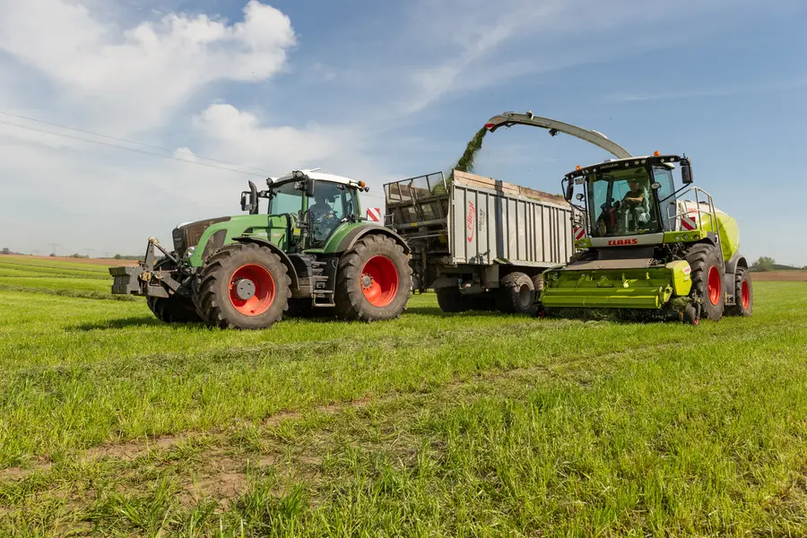
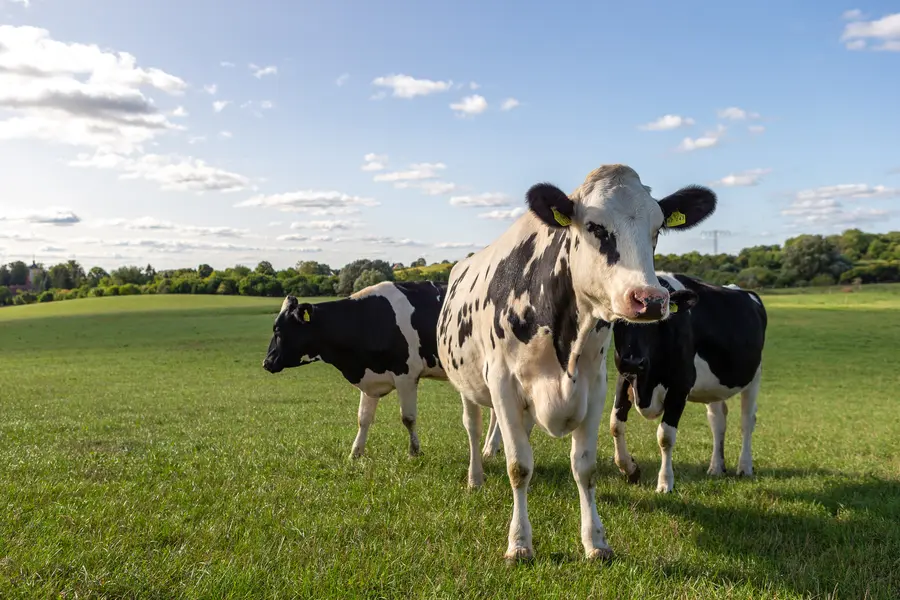
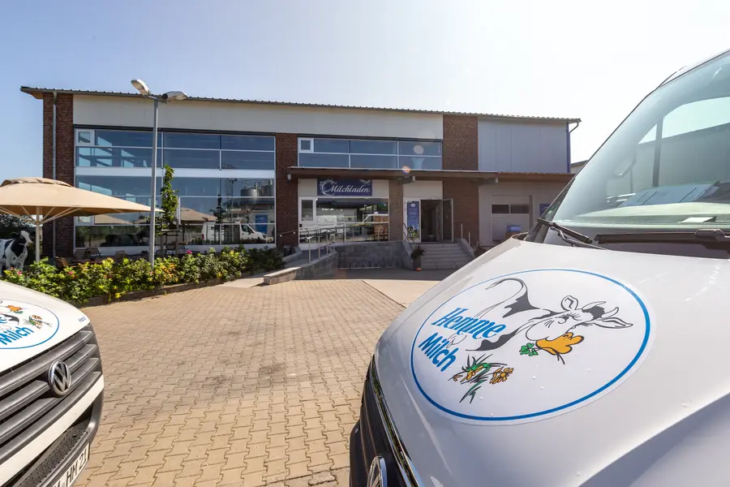
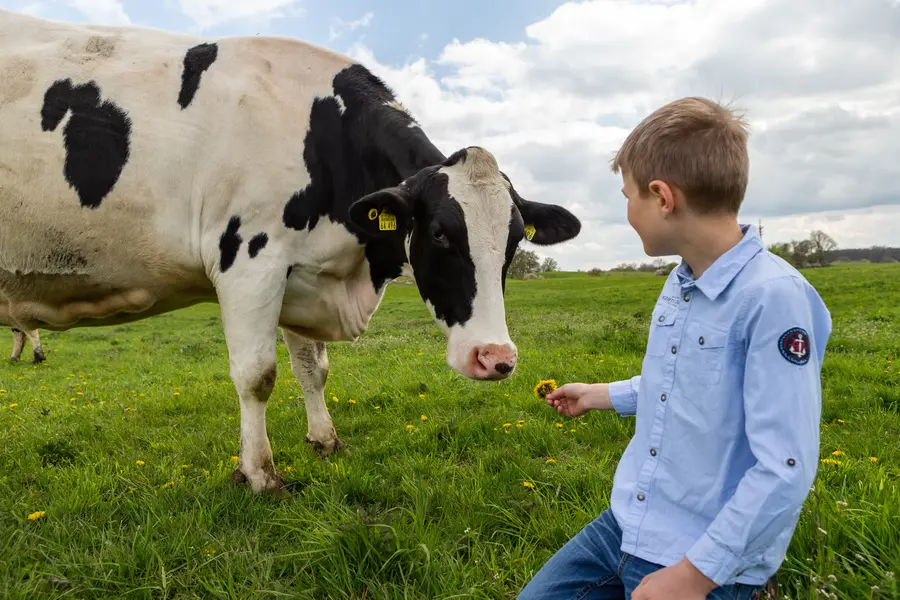
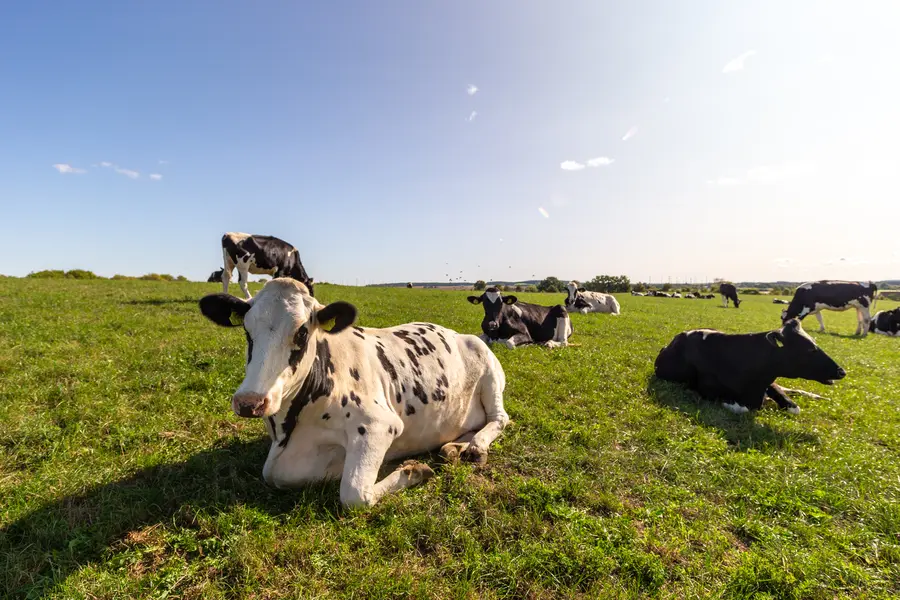

Hofmolkerei · Schmargendorf · Uckermark
Frisch
vom Hof.

Milch, Joghurt und Butter von unseren eigenen Kühen, abgefüllt in unserer eigenen Molkerei. Von der Kuh zu euch in 24 Stunden.


- 600 Kühe, eigene und von vier Partnerhöfen
- 90 % des Futters wächst auf unseren Feldern
- 24 h vom Melken bis ins Kühlregal
- 0 H-Milch. Nur schonend pasteurisiert
Was aus unserer Milch wird
 Joghurt
Natur, mild und neun Fruchtsorten
Joghurt
Natur, mild und neun Fruchtsorten


 Milchgetränke
Schoko, Vanille, Erdbeere, Eiskaffee
Milchgetränke
Schoko, Vanille, Erdbeere, Eiskaffee


 Butter & Buttermilch
Aus natürlich gesäuertem Rahm, wie früher
Fassbutter 200 gButtermilch naturButtermilch Zitrone & Limette
Alle Sorten ansehen
Butter & Buttermilch
Aus natürlich gesäuertem Rahm, wie früher
Fassbutter 200 gButtermilch naturButtermilch Zitrone & Limette
Alle Sorten ansehen

 Quark
Cremig, zum Backen und Frühstücken
Alsahna natur, 250 g
Quark
Cremig, zum Backen und Frühstücken
Alsahna natur, 250 g
 Dessert
Aus frischer Hemme-Vollmilch
SchokopuddingVanillepuddingPorridge Apfel-Zimt, vegan
Alle Sorten ansehen
Dessert
Aus frischer Hemme-Vollmilch
SchokopuddingVanillepuddingPorridge Apfel-Zimt, vegan
Alle Sorten ansehen


Frischmilch im 10-Liter-Beutel
Für Siebträger, Milchschaum und Küche. 1,8 % oder 3,7 %.
Fassbutter im 12-kg-Block
Für Bäckereien und Konditoreien, die den Unterschied im Teig merken.

Milchgetränke 230 ml to go
Für Kühltheke, Kantine und Café. Acht Stück pro Karton.
Der Milchmann kommt vorbei
Wir beliefern Läden, Cafés, Bäckereien und Eisdielen in Brandenburg selbst. Einmalig in der Region.
Vertrieb anfragenUnsere Verpackung
Darum der
Hemme Milch-Beutel
- 14 gGewicht. Halb so viel Material wie eine übliche Milchverpackung.
- 40 %Kreide im Material statt Kunststoff.
- Warmmachen direkt im Beutel. Er ist mikrowellengeeignet.
 Einfach aufreißen ohne Schere
Einfach aufreißen ohne Schere Praktisch zu gießen und restlos zu entleeren
Praktisch zu gießen und restlos zu entleeren Platzsparend zu entsorgen
Platzsparend zu entsorgen
Von der Kuh zu euch.
In 24 Stunden.
-

Eigenes Futter
Rund 90 % von dem, was unsere Kühe fressen, wächst auf unseren Feldern im Biosphärenreservat.
-

Eigene Kühe
600 Kühe, auf unserem Hof und bei vier Partnerbetrieben aus der Nachbarschaft.
-

Stunde 0: Melken
Jeden Tag rund 33.000 Liter. Die Uhr beginnt zu laufen.
-
Foto Molkerei folgt
Eigene Molkerei
Schonend pasteurisiert, 15 bis 20 Sekunden bei rund 75 °C. Keine H-Milch.
-

Stunde 24: bei euch
Im Kühlregal in Berlin und Brandenburg, im Milchladen und beim Milchmann.

Dafür stehen wir
Regionalität
Die Hemme Milch Frische: Eigenes Futter. Eigene Kühe. Eigene Molkerei. Dazu Milch ausgewählter Partnerhöfe.
Transparenz
Landwirtschaft ganz nah: Erlebt auf unserem Hof, wo die Milch herkommt, von unseren Kühen bis zur Molkerei.
Mit Sorgfalt
Für vollen Geschmack: Schonende Verarbeitung der Milch in handwerklichen Herstellverfahren.
Verantwortung
Ein Kreislauf: Unsere Landwirtschaft verbindet Futteranbau, Tierhaltung und die Düngung der Felder.
Genuss
Unsere gute Milch und unsere exzellenten Milchprodukte sollen Freude bereiten und hervorragend schmecken.
Mit  geführt! Als Familienunternehmen stehen wir für ehrliche Qualität aus Überzeugung.
geführt! Als Familienunternehmen stehen wir für ehrliche Qualität aus Überzeugung.
Kommt vorbei!
Die Kälbchen warten schon.
Hofcafé und Milchladen: Mittwoch bis Sonntag, 11 bis 18 Uhr





Live KuhCam Schaut jetzt in den Stall.Wo gibt's Hemme bei euch?
In Berlin und Brandenburg stehen wir bei Edeka, Rewe und vielen kleinen Läden im Kühlregal. Gebt eure Postleitzahl ein.
 Eventlocation
Feiern mit Uckermark-Blick
Bis 120 Gäste. Familienfeier, Seminar, Hochzeit.
Eventlocation
Feiern mit Uckermark-Blick
Bis 120 Gäste. Familienfeier, Seminar, Hochzeit.
 Karriere
Hier tun wir das, was wir lieben
Stall, Molkerei, Café, Fahrer. Wir freuen uns auf euch.
Karriere
Hier tun wir das, was wir lieben
Stall, Molkerei, Café, Fahrer. Wir freuen uns auf euch.

„Von der Erzeugung des Futters bis zum fertigen Produkt machen wir alles selbst.“
Gunnar Hemme, Gründer. Seit dem 17. November 1998 in Schmargendorf. Die Familie führt ihren Hof in der Wedemark seit 1589.
Unser Team kennenlernen